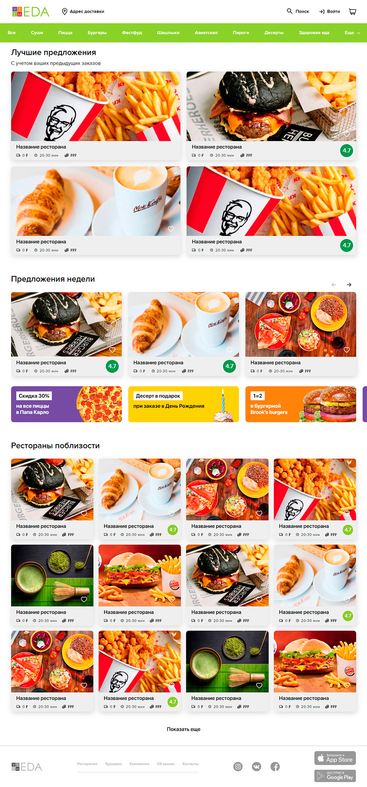
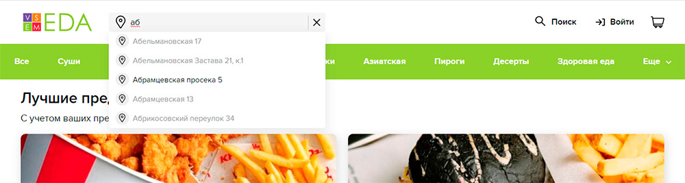
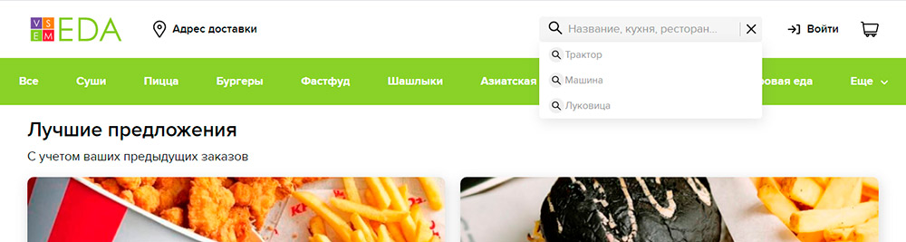
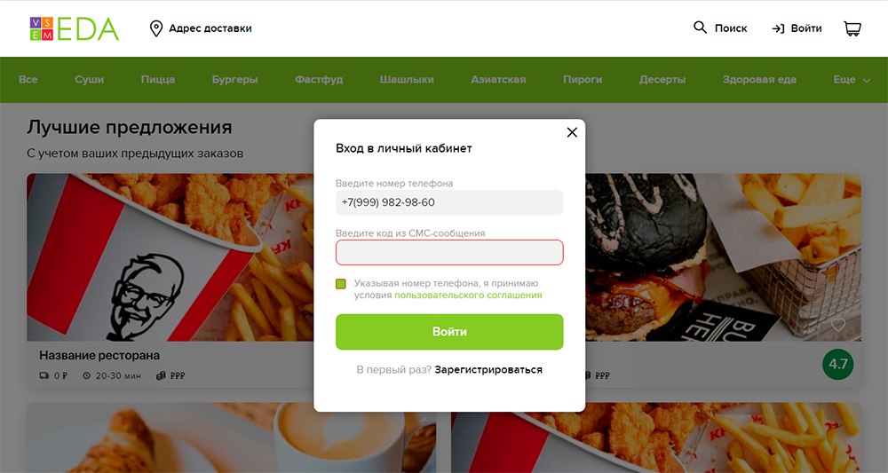
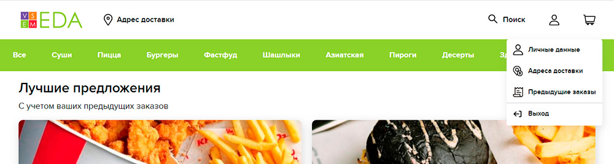

Сервис доставки еды Vsem EDA
Задача:
Сверстать одну страницу из Figma макета. Страница должна быть наполнена тестовыми данными (как в дизайне). Верстка контейнерная (т.е. есть максимальная ширина контента, см в фигму).
Должны работать следующие функции:
- Поле адреса. При нажатии ввода адреса должен открываться инпут (как показано в дизайне) и заранее заданы несколько улиц, которые появляются при вводе первых 3-х букв этой улицы (в проекте реализован поиск улиц на А, Б, В).
- Поиск. Должны сохранять в кеше 3 последних введенных значения. Сохранение происходит по нажатию стрелочки вправо или Энтер.
- Войти. Здесь должно появиться модальное окно и при вводе любой информации мы авторизуемся и ссылка Войти в хедере меняется на Мой аккаунт.
- Выпадающее меню после авторизации. Должно октрываться и работать кнопка Выход.
- Предложение недели. здесь должен работать сролл по стрелочкам вправо и влево. По нажатию открывается 1 новое предложение. По контенту используем 3 изображения с дизайна, просто должны меняться одна за другой.
- Мобильная верстка. В реальном проекте она будет, но в тестовом она не нужна.
Ссылки
Код посмотреть: vsem-eda
Страница проекта: Vsem EDA
Скриншоты




